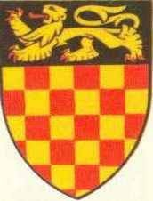

Kung av Väst-Saxarna & Anglo-Saxarna. Blev högst 50 år.
849 Wantage, Berkshire, England. [1]
899-10-26. [1]
Alfred den store (848/849 – 26 oktober 899) var kung av västsaxarna från 871 till ca. 886 och kung av anglosaxarna från ca. 886 till 899. Han var den yngste sonen till kung Æthelwulf , som dog när Alfred var ung. Tre av Alfreds bröder, Æthelbald , Æthelberht och Æthelred , regerade i tur och ordning före honom. Under Alfreds styre infördes betydande administrativa och militära reformer, vilket ledde till bestående förändringar i England. [2]
Efter att ha bestigit tronen tillbringade Alfred flera år med att bekämpa vikingainvasioner . Han vann en avgörande seger i slaget vid Edington 878 och gjorde en överenskommelse med vikingarna, vilket skapade vad som var känt som Danelaw i norra England. Alfred övervakade också omvändelsen av vikingaledaren Guthrum till kristendomen. Han försvarade sitt kungarike mot vikingaförsöket till erövring och blev den dominerande härskaren i England. [3] Detaljer om hans liv beskrivs i ett verk av den walesiska forskaren och biskopen Asser från 900-talet .
Alfred hade ett rykte som en lärd och barmhärtig man av nådig och rättvis natur som uppmuntrade utbildning, föreslog att grundutbildningen skulle bedrivas på fornengelska snarare än latin och förbättrade rättssystemet och militärstrukturen och hans folks livskvalitet. Han fick epitetet "den store" på 1500-talet.
Innehåll
Familj
Ytterligare information: House of Wessex släktträd
Alfred var en son till Æthelwulf , kung av Wessex , och hans hustru Osburh . [4] Enligt hans biograf, Asser , som skrev 893, "I året av vår Herres inkarnation 849 föddes Alfred, kung av anglosaxarna", på den kungliga egendomen som heter Wantage , i distriktet känt som Berkshire [a] ] (som är så kallad från Berroc Wood, där buxträdet växer mycket rikligt)." Detta datum har accepterats av redaktörerna för Assers biografi, Simon Keynes och Michael Lapidge , [5] och av andra historiker som David Dumville och Richard Huscroft.[6] Men West Saxon genealogiska listor uppger att Alfred var 23 när han blev kung i april 871, vilket innebär att han föddes mellan April 847 och April 848. [7] Denna datering antas i biografin Alfred från Alfred Smyth , som betraktar Assers biografi som bedräglig, [8] ett påstående som avvisas av andra historiker. [9] Richard Abels i sin biografi diskuterar båda källorna men bestämmer inte mellan dem och daterar Alfreds födelse till 847/849, medan Patrick Wormald i sin Oxford Dictionary of National Biography- artikel daterar den 848/849. [b]Berkshire hade historiskt sett tvistats mellan Wessex och Mercia, och så sent som 844 visade en charter att det var en del av Mercia, men Alfreds födelse i länet är ett bevis på att kontrollen i slutet av 840-talet hade övergått till Wessex. [11]
Han var den yngsta av sex barn. Hans äldsta bror, Æthelstan , var tillräckligt gammal för att bli utnämnd till underkung av Kent 839, nästan 10 år innan Alfred föddes. Han dog i början av 850-talet. Alfreds nästa tre bröder var successivt kungar av Wessex. Æthelbald (858-860) och Æthelberht (860-865) var också mycket äldre än Alfred, men Æthelred (865-871) var bara ett eller två år äldre. Alfreds enda kända syster, Æthelswith , gifte sig med Burgred , kung av mittlandsriket Merciaår 853. De flesta historiker tror att Osburh var mor till alla Æthelwulfs barn, men vissa tyder på att de äldre föddes till en oregistrerad första hustru. Osburh härstammade från härskarna på Isle of Wight . Hon beskrevs av Alfreds biograf Asser som "en högst religiös kvinna, ädel till temperament och ädel till födelse". Hon hade dött 856 när Æthelwulf gifte sig med Judith , dotter till Karl den skallige , kung av Västfrankien . [12]
År 868 gifte Alfred sig med Ealhswith , dotter till den mercianska adelsmannen Æthelred Mucel , ealdorman i Gaini, och hans hustru Eadburh, som var av kunglig merciansk härkomst. [13] [c] Deras barn var Æthelflæd , som gifte sig med Æthelred, Mercians Herre ; Edward den äldre , Alfreds efterträdare som kung; Æthelgifu , abbedissa av Shaftesbury ; Ælfthryth , som gifte sig med Baldwin , greve av Flandern ; och Æthelweard . [15]
Bakgrund
Karta över Storbritannien 886
Alfreds farfar, Ecgberht , blev kung av Wessex år 802, och enligt historikern Richard Abels uppfattning måste det ha verkat mycket osannolikt för samtida att han skulle upprätta en bestående dynasti. I 200 år hade tre familjer kämpat om den västsaxiska tronen, och ingen son hade följt sin far som kung. Ingen förfader till Ecgberht hade varit kung av Wessex sedan Ceawlin i det sena sjätte århundradet, men han troddes vara en ättling till Cerdic , grundaren av den västsaxiska dynastin. [d] Detta gjorde Ecgberht till en ætheling– en prins som är berättigad till tronen. Men efter Ecgberhts regeringstid räckte härkomst från Cerdic inte längre för att göra en man till etheling. När Ecgberht dog 839, efterträddes han av sin son Æthelwulf; alla efterföljande västsaxiska kungar var ättlingar till Ecgberht och Æthelwulf, och var också söner till kungar. [18]
I början av 800-talet var England nästan helt under anglosaxarnas kontroll . Mercia dominerade södra England, men dess överhöghet upphörde 825 när det på ett avgörande sätt besegrades av Ecgberht i slaget vid Ellendun . [19] De två kungadömena blev allierade, vilket var viktigt i motståndet mot vikingatacker . [20] År 853 bad kung Burgred av Mercia västsaxisk hjälp för att undertrycka ett walesiskt uppror, och Æthelwulf ledde en västsaxisk kontingent i en framgångsrik gemensam kampanj. Samma år gifte Burgred sig med Æthelwulfs dotter, Æthelswith. [21]
År 825 skickade Ecgberht Æthelwulf för att invadera det mercianska underriket Kent , och dess underkung, Baldred , drevs ut kort därefter. År 830 hade Essex , Surrey och Sussex underkastat sig Ecgberht, och han hade utsett Æthelwulf att styra de sydöstra territorierna som kung av Kent. [22] Vikingarna härjade på Isle of Sheppey 835, och året därpå besegrade de Ecgberht vid Carhampton i Somerset , [23] men 838 vann han över en allians av Cornishmen och Vikings i slaget vid Hingston Down, vilket reducerar Cornwall till status som ett kundrike . [24] När Æthelwulf lyckades, utnämnde han sin äldste son Æthelstan till underkung av Kent. [25] Ecgberht och Æthelwulf kanske inte hade tänkt sig en permanent förening mellan Wessex och Kent eftersom de båda utnämnde söner till underkungar och charter i Wessex bevittnades (bevittnades) av västsaxiska magnater, och Kentish charter bevittnades av den kentiska eliten; båda kungarna behöll övergripande kontroll och underkungarna fick inte ge ut sina egna mynt. [26]
Vikingaräder ökade i början av 840-talet på båda sidor om Engelska kanalen, och 843 besegrades Æthelwulf vid Carhampton. [25] År 850 besegrade Æthelstan en dansk flotta utanför Sandwich i det första registrerade sjöslaget i engelsk historia. [27] År 851 besegrade Æthelwulf och hans andra son, Æthelbald, vikingarna i slaget vid Aclea och, enligt Anglo-Saxon Chronicle , "gjorde där den största slakten av en hednisk plundrarmé som vi har hört berätta om uppe till denna dag, och där tog segern". [28]Æthelwulf dog 858 och efterträddes av sin äldsta överlevande son, Æthelbald, som kung av Wessex och av sin nästa äldsta son, Æthelberht, som kung av Kent. Æthelbald överlevde bara sin far med två år och Æthelberht förenade då för första gången Wessex och Kent till ett enda kungarike. [29]
Barndom
Alfreds far Æthelwulf av Wessex i det tidiga 1300-talets Genealogical Roll of the Kings of England
Enligt Asser vann Alfred i sin barndom en vackert dekorerad bok med engelsk poesi, som erbjöds som ett pris av sin mor till den första av hennes söner som kunde memorera den. Han måste ha fått det uppläst för honom eftersom hans mor dog när han var omkring sex och han lärde sig inte läsa förrän han var 12. [30] År 853 rapporteras Alfred av Anglo-Saxon Chronicle ha skickats till Rom där han bekräftades av påven Leo IV , som "smorde honom till kung". [31] ViktorianskFörfattare tolkade senare detta som en förväntansfull kröning som förberedelse för hans eventuella tronföljd i Wessex. Detta är osannolikt; hans arv kunde inte ha förutsetts vid den tiden eftersom Alfred hade tre levande äldre bröder. Ett brev från Leo IV visar att Alfred gjordes till en " konsul " och en felaktig tolkning av denna insats, avsiktlig eller oavsiktlig, kunde förklara senare förvirring. [15] Det kan vara baserat på det faktum att Alfred senare följde med sin far på en pilgrimsfärd till Rom där han tillbringade en tid vid Karl den Skalliges , frankernas kung , hov omkring 854–855. [32] När de återvände från Rom 856 avsattes Æthelwulf av sin son Æthelbald. Med inbördeskrig i antågande möttes rikets magnater i rådet för att bilda en kompromiss. Æthelbald behöll de västra shiresna (dvs. historiska Wessex), och Æthelwulf härskade i öster. Efter att kung Æthelwulf dog 858 styrdes Wessex av tre av Alfreds bröder i följd: Æthelbald, Æthelberht och Æthelred . [33]
Alfreds bröders regeringstid
En karta över rutten som togs av Viking Great Heathen Army som anlände till England från Danmark, Norge och södra Sverige 865
Alfred nämns inte under sina äldre bröder Æthelbalds och Æthelberhts korta regeringstid. Den anglosaxiska krönikan beskriver den stora hedniska armén av danskar som landar i East Anglia med avsikten att erövra de fyra kungadömena som utgjorde det anglosaxiska England 865. [34] Alfreds offentliga liv började 865 vid 16 års ålder med hans tillträde tredje bror, 18-årige Æthelred. Under denna period gav biskop Asser Alfred den unika titeln secundarius , vilket kan tyda på en position som liknar den keltiska tanisten , en erkänd efterträdare nära förknippad med den regerande monarken. Detta arrangemang kan ha blivit sanktionerat av Alfreds far eller av Witanför att skydda sig mot faran för en omtvistad arvskifte om Æthelred skulle falla i strid. Det var en välkänd tradition bland andra germanska folk - som svenskar och franker som anglosaxarna var nära släkt med - att kröna en efterträdare som kunglig prins och militärchef. [35]
Vikingainvasion
År 868 antecknades Alfred som slåss bredvid Æthelred i ett misslyckat försök att hålla den stora hedniska armén ledd av Ivar den benlösa borta från det angränsande kungariket Mercia . [36] Danskarna anlände till hans hemland i slutet av 870, och nio förlovningar utkämpades under det följande året, med blandade resultat; platserna och datumen för två av dessa strider har inte registrerats. En framgångsrik skärmytsling i slaget vid Englefield i Berkshire den 31 december 870 följdes av ett svårt nederlag vid belägringen och slaget vid Reading av Ivars bror Halfdan Ragnarsson den 5 januari 871. Fyra dagar senare vann anglosaxarna en seger kl. det slaget vid Ashdown påBerkshire Downs , möjligen nära Compton eller Aldworth . [35] Saxarna besegrades i slaget vid Basing den 22 januari. De besegrades igen den 22 mars i slaget vid Merton (kanske Marden i Wiltshire eller Martin i Dorset). [35] Æthelred dog kort därefter i april. [35]
Kung i krig
Tidiga kamper
I april 871 dog kung Æthelred och Alfred tillträdde Wessex tron och bördan av dess försvar, trots att Æthelred lämnade två minderåriga söner, Æthelhelm och Æthelwold. Detta var i enlighet med den överenskommelse som Æthelred och Alfred hade gjort tidigare samma år i en församling på en oidentifierad plats som heter Swinbeorg. Bröderna hade kommit överens om att var och en av dem överlevde den andre skulle ärva den personliga egendom som kung Æthelwulf hade lämnat gemensamt till sina söner i sitt testamente. Den avlidnes söner skulle bara få den egendom och rikedom som deras far hade bestämt på dem och vilken ytterligare jord som deras farbror hade förvärvat. Den outtalade utgångspunkten var att den överlevande brodern skulle bli kung. Med tanke på den danska invasionen och hans syskonbarns ungdom gick Alfreds anslutning troligen obestridd. [37]
Medan han var upptagen med begravningsceremonierna för sin bror, besegrade danskarna den sachsiska armén i hans frånvaro på en icke namngiven plats och sedan igen i hans närvaro i Wilton i maj. [35] Nederlaget vid Wilton krossade alla återstående hopp om att Alfred skulle kunna driva inkräktarna från hans kungarike. Alfred tvingades istället sluta fred med dem. Även om villkoren för freden inte är nedtecknade, skrev biskop Asser att hedningarna gick med på att utrymma riket och höll sitt löfte. [38]
Vikingaarmén drog sig tillbaka från Reading hösten 871 för att ta upp vinterkvarter i Mercian London. Även om det inte nämns av Asser eller av Anglo-Saxon Chronicle , betalade Alfred förmodligen vikingarna kontanter för att lämna, ungefär som Mercianerna skulle göra året därpå. [38] Hoards som dateras till vikingaockupationen av London 871/872 har grävts ut vid Croydon , Gravesend och Waterloo Bridge . Dessa fynd tyder på kostnaden för att sluta fred med vikingarna. Under de följande fem åren ockuperade danskarna andra delar av England. [39]
År 876, under sina tre ledare Guthrum , Oscetel och Anwend, gled danskarna förbi den sachsiska armén och attackerade och ockuperade Wareham i Dorset. Alfred blockerade dem men kunde inte ta Wareham genom attack. Han förhandlade fram en fred som innebar ett utbyte av gisslan och eder, som danskarna svor på en "helig ring" i samband med dyrkan av Thor . Danskarna bröt sitt ord och efter att ha dödat alla gisslan smög de i skydd av natten till Exeter i Devon. [40]
Alfred blockerade vikingaskeppen i Devon, och med en hjälpflotta som hade spridits av en storm, tvingades danskarna att underkasta sig. Danskarna drog sig tillbaka till Mercia. I januari 878 gjorde danskarna en plötslig attack mot Chippenham , ett kungligt fäste där Alfred hade bott över julen "och de flesta människorna dödade de, utom kungen Alfred, och han med ett litet gäng tog sig fram genom skogen och träsk, och efter påsk byggde han ett fort i Athelney i Somersets myrar , och från det fortet fortsatte han att slåss mot fienden". [41] Från sitt fort i Athelney, en ö i myrarna nära North Petherton , kunde Alfred starta en motståndskampanj och samla den lokala milisen från Somerset,Wiltshire och Hampshire . [35] 878 var nadir i historien om de anglosaxiska kungadömena. Eftersom alla andra kungadömen hade fallit för vikingarna, var det bara Wessex som gjorde motstånd. [42]
Tårtlegenden
En legend berättar hur när Alfred först flydde till Somerset Levels , fick han skydd av en bondekvinna som, omedveten om hans identitet, lämnade honom för att titta på några vetekakor som hon hade låtit laga mat på elden. [42] [43] Alfred var upptagen av problemen i sitt kungarike och lät av misstag kakorna brinna och blev grovt utskälld av kvinnan när hon återvände. Det finns inga samtida bevis för legenden, men det är möjligt att det fanns en tidig muntlig tradition. Den första kända skriftliga redogörelsen för händelsen är från cirka 100 år efter Alfreds död. [43]
Kontring och seger
Kung Alfreds torn (1772) på den förmodade platsen för Egberts sten, samlingsplatsen före slaget vid Edington . [e]
Under den sjunde veckan efter påsk (4–10 maj 878), runt pingstdagen , red Alfred till Egbert's Stone öster om Selwood där han möttes av "alla människor i Somerset och Wiltshire och i den del av Hampshire som ligger på denna sida av havet (det vill säga väster om Southampton Water ), och de gladde sig över att se honom". [41] Alfreds uppkomst från sitt träskfäste var en del av en noggrant planerad offensiv som innebar att höja fyrderna i tre shires . Detta innebar inte bara att kungen hade behållit lojaliteten hos ealdormen , kungliga revar och kungensthegns , som anklagades för att ta ut och leda dessa styrkor, men att de hade bibehållit sina myndighetspositioner på dessa orter tillräckligt väl för att svara på hans kallelse till krig. Alfreds handlingar antyder också ett system av scouter och budbärare. [45]
Alfred vann en avgörande seger i det efterföljande slaget vid Edington som kan ha utkämpats nära Westbury, Wiltshire . Han förföljde sedan danskarna till deras fäste i Chippenham och svalt dem till underkastelse. En av villkoren för kapitulationen var att Guthrum konverterade till kristendomen. Tre veckor senare döptes den danske kungen och 29 av hans högsta män vid Alfreds hov i Aller, nära Athelney, och Alfred fick Guthrum som sin andlige son. [35]
Enligt Asser,
Avbindningen av chrisom [f] på den åttonde dagen ägde rum på en kunglig egendom som heter Wedmore .
— Keynes & Lapidge 1983 , kap. 56
I Wedmore förhandlade Alfred och Guthrum om vad vissa historiker har kallat Wedmore-fördraget , men det skulle dröja några år efter att fientligheterna upphörde som ett formellt fördrag undertecknades. [47] Enligt villkoren i det så kallade Wedmore-fördraget var den konverterade Guthrum tvungen att lämna Wessex och återvända till East Anglia. Följaktligen lämnade vikingaarmén 879 Chippenham och tog sig till Cirencester. [48] Det formella fördraget mellan Alfred och Guthrum , bevarat på gammalengelska i Corpus Christi College, Cambridge (manuskript 383), och i en latinsk samling känd som Quadripartitus, förhandlades senare, kanske 879 eller 880, när kung Ceolwulf II av Mercia avsattes. [49]
Det fördraget delade upp kungariket Mercia. Enligt dess villkor var gränsen mellan Alfreds och Guthrums kungadömen att löpa uppför Themsen till floden Lea , följa Lea till dess källa (nära Luton ), därifrån sträcka sig i en rak linje till Bedford och från Bedford följa floden Gå till Watling Street . [50]
Alfred efterträdde Ceolwulfs kungarike bestående av västra Mercia, och Guthrum införlivade den östra delen av Mercia i ett utvidgat kungarike av East Anglia (hädanefter känt som Danelagen ). Enligt fördraget skulle Alfred dessutom ha kontroll över den mercianska staden London och dess myntverk – åtminstone för tillfället. [51] År 825 hade Anglo-Saxon Chronicle antecknat att folket i Essex, Sussex, Kent och Surrey kapitulerade till Egbert , Alfreds farfar. Från dess till ankomsten av den stora hedniska armén, hade Essex utgjort en del av Wessex. Efter grundandet av Danelaw verkar det som att en del av Essex skulle ha överlåtits till danskarna, men hur mycket är inte klart. [52]
880-talet
Ytterligare information: Londinium och anglosaxiska London
Med undertecknandet av fördraget mellan Alfred och Guthrum , en händelse som oftast hölls för att ha ägt rum runt 880 när Guthrums folk började bosätta East Anglia , neutraliserades Guthrum som ett hot. [53] Vikingaarmén, som hade stannat i Fulham under vintern 878–879, seglade mot Gent och var aktiv på kontinenten från 879 till 892. [54] [55]
Det förekom lokala räder på Wessex kust under hela 880-talet. År 882 utkämpade Alfred ett litet sjöslag mot fyra danska fartyg. Två av fartygen förstördes och de andra gav upp. Detta var ett av fyra sjöslag som registrerats i Anglo-Saxon Chronicle , varav tre involverade Alfred. [56] Liknande små skärmytslingar med oberoende vikingaanfallare skulle ha inträffat under en stor del av perioden som de hade gjort i årtionden. [57]
År 883 befriade påven Marinus det sachsiska kvarteret i Rom från skatt, troligen mot att Alfred lovade att årligen skicka allmosor till Rom, vilket kan vara ursprunget till den medeltida skatt som kallas Peters penna . Påven skickade gåvor till Alfred, inklusive vad som ansågs vara en del av det sanna korset . [58]
Efter undertecknandet av fördraget med Guthrum besparades Alfred under en tid från alla storskaliga konflikter. Trots denna relativa fred tvingades kungen ta itu med ett antal danska räder och intrång. Bland dessa var en räd i Kent , ett allierat kungarike i sydöstra England , under år 885, vilket möjligen var det största rädet sedan striderna med Guthrum. Assers berättelse om razzian placerar de danska anfallarna i den sachsiska staden Rochester , [54] där de byggde en tillfällig fästning för att belägra staden. Som svar på detta intrång ledde Alfred en anglosaxarekraft mot danskarna som istället för att engagera Wessex armé flydde till sina strandade fartyg och seglade till en annan del av Storbritannien. Den retirerande danska styrkan lämnade förmodligen Storbritannien följande sommar. [59]
Inte långt efter den misslyckade danska räden i Kent skickade Alfred sin flotta till East Anglia. Syftet med denna expedition är omdiskuterat, men Asser hävdar att det var för plundringens skull. [59] Efter att ha rest uppför floden Stour möttes flottan av danska fartyg som var 13 eller 16 (källorna varierar beroende på antalet), och en strid följde. [59] Den anglosaxiska flottan gick ut som segrare, och som Huntingdon berättar, "lastad med byte". [60] Den segerrika flottan blev överraskad när de försökte lämna floden Stour och attackerades av en dansk styrka vid flodens mynning. Den danska flottan besegrade Alfreds flotta, som kan ha försvagats i det tidigare engagemanget. [61]
En plakett i City of London som noterar restaureringen av den romerska muromgärdade staden av Alfred
Ett år senare, 886, återockuperade Alfred staden London och gav sig i kast med att göra den beboelig igen. [62] Alfred anförtrodde staden åt sin svärson Æthelred , ealdorman i Mercia. Restaureringen av London fortskred under senare hälften av 880-talet och tros ha kretsat kring en ny gatuplan; lade till befästningar utöver de befintliga romerska murarna; och, vissa tror, byggandet av matchande befästningar på södra stranden av Themsen . [63]
Detta är också den period då nästan alla krönikörer är överens om att det sachsiska folket i England före föreningen underkastade sig Alfred. [64] År 888 dog Æthelred, ärkebiskopen av Canterbury . Ett år senare dog Guthrum, eller Athelstan vid hans dopnamn, Alfreds tidigare fiende och kung av East Anglia, och begravdes i Hadleigh, Suffolk . [65] Guthrums död förändrade det politiska landskapet för Alfred. Det resulterande maktvakuumet gjorde att andra makthungriga krigsherrar var ivriga att ta hans plats under de följande åren. De lugna åren i Alfreds liv närmade sig sitt slut. [66]
Vikingattacker (890-talet)
Efter ytterligare en lugn, hösten 892 eller 893, attackerade danskarna igen. De fann sin position på det europeiska fastlandet osäkra och gick över till England i 330 fartyg i två divisioner. De förskansade sig, den större kroppen, i Appledore, Kent och den mindre under Hastein , i Milton , också i Kent. Inkräktarna tog med sig sina fruar och barn, vilket tyder på ett meningsfullt försök till erövring och kolonisering. Alfred, 893 eller 894, intog en position från vilken han kunde observera båda krafterna. [67]
Medan han förde samtal med Hastein bröt danskarna vid Appledore ut och slog till mot nordväst. De blev omkörda av Alfreds äldsta son, Edward och besegrades i slaget vid Farnham i Surrey. De tog sin tillflykt till en ö vid Thorney , vid floden Colne mellan Buckinghamshire och Middlesex , där de blockerades och tvingades ta gisslan och lovade att lämna Wessex. [68] [67] De reste sedan till Essex och efter att ha lidit ytterligare ett nederlag vid Benfleet , förenade de sig med Hasteins styrka vid Shoebury . [68]
Alfred hade varit på väg för att avlösa sin son i Thorney när han hörde att de nordumbriska och östanglianska danskarna belägrade Exeter och ett namnlöst fäste på North Devons kust. Alfred skyndade sig genast västerut och höjde belägringen av Exeter . Ödet för den andra platsen är inte registrerat. [69]
Styrkan under Hastein gav sig ut för att marschera uppför Thamesdalen , möjligen med tanken att hjälpa sina vänner i väst. De möttes av en stor styrka under de tre stora ealdormen i Mercia , Wiltshire och Somerset och tvingades bege sig iväg mot nordväst och slutligen omkördes och blockerades vid Buttington . (Vissa identifierar detta med Buttington Tump vid mynningen av floden Wye , andra med Buttington nära Welshpool .) Ett försök att bryta igenom de engelska linjerna misslyckades. De som rymde drog sig tillbaka till Shoebury. Efter att ha samlat in förstärkningar gjorde de ett plötsligt streck över England och ockuperade den ruinerade romarenChesters murar . Engelsmännen försökte sig inte på en vinterblockad utan nöjde sig med att förstöra alla förnödenheter i distriktet. [69]
Tidigt under 894 eller 895 tvingade bristen på mat danskarna att återigen dra sig tillbaka till Essex. I slutet av året drog danskarna sina skepp uppför Themsen och floden Lea och befäste sig 32 km norr om London. En frontalattack på de danska linjerna misslyckades, men senare på året såg Alfred ett sätt att hindra floden för att förhindra att de danska fartygen trädde ut. Danskarna insåg att de var utmanövrerade, slog av nordväst och övervintrade vid Cwatbridge nära Bridgnorth . Nästa år, 896 (eller 897), gav de upp kampen. Några drog sig tillbaka till Northumbria , några till East Anglia . De som inte hade några kopplingar i England återvände till kontinenten.[69]
Militär omorganisation
Alfred den store silverofferpenning, 871–899. Legend: AELFRED REX SAXONUM ('Alfred King of the Saxons').
De germanska stammarna som invaderade Storbritannien under femte och sjätte århundradena förlitade sig på det obepansrade infanteriet som försågs med deras stamavgift , eller fyrd , och det var på detta system som den militära makten i de flera kungadömena i det tidiga anglosaxiska England berodde. [70] Fyrden var en lokal milis i den anglosaxiska shiren där alla frimän var tvungna att tjäna; de som vägrade militärtjänsten blev föremål för böter eller förlust av sin mark. [71] Enligt lagkoden för kung Ine av Wessex , utfärdad omkring 694,
Om en adelsman, som innehar jord, försummar militärtjänsten, skall han betala 120 shilling och förverka sin jord; en adelsman som inte äger någon jord skall betala 60 shilling; en allmoge skall betala 30 skilling i böter för att han försummat värnplikten
— Attenborough 1922 , s. 52–53
Wessex historia av misslyckanden som föregick Alfreds framgång 878 betonade för honom att det traditionella stridssystemet han hade ärvt spelade till danskarnas fördel. Medan anglosaxarna och danskarna attackerade bosättningar för plundring, använde de olika taktik. I sina räder föredrog anglosaxarna traditionellt att anfalla frontalt genom att samla sina styrkor i en sköldvägg , avancera mot sitt mål och övervinna den mötande muren som ställdes mot dem i försvar. [72] Danskarna föredrog att välja lätta mål och kartlade försiktiga razzior för att undvika att riskera sitt plundring med attacker med hög insats för mer. Alfred bestämde att deras taktik var att starta små attacker från en säker bas till vilken de kunde dra sig tillbaka om deras anfallare skulle möta starkt motstånd. [72]
Baserna förbereddes i förväg, ofta genom att inta ett gods och utöka dess försvar med diken, vallar och palissader . Väl inne i befästningen, insåg Alfred, hade danskarna fördelen, bättre belägna för att överleva sina motståndare eller krossa dem med en motattack eftersom de belägrande styrkornas proviant och uthållighet avtog. [72]
De medel med vilka anglosaxarna samlade styrkor för att försvara sig mot marodörer gjorde dem också sårbara för vikingarna. Det var shire fyrds ansvar att ta itu med lokala räder. Kungen kunde kalla in den nationella milisen för att försvara kungariket, men i fallet med vikingatågen gjorde problem med kommunikation och anskaffning av förnödenheter att den nationella milisen inte kunde samlas tillräckligt snabbt. Det var först efter att räden hade börjat som en uppmaning gick ut till markägare att samla sina män till strid. Stora regioner kunde ödeläggas innan fyrden kunde samlas och anlända. Även om godsägarna var skyldiga till kungen att förse dessa män när de kallades, övergav många av dem under attackerna 878 sin kung och samarbetade med Guthrum. [73] [74]
Med dessa lärdomar i åtanke utnyttjade Alfred de relativt fredliga åren efter sin seger i Edington med en ambitiös omstrukturering av det sachsiska försvaret. På en resa till Rom hade Alfred bott hos Karl den skallige och det är möjligt att han kan ha studerat hur de karolingiska kungarna hade handlat med vikingaplågare. Genom att lära sig av deras erfarenheter kunde han upprätta ett system för beskattning och försvar för Wessex. Det hade funnits ett system av befästningar i Mercia före vikingatiden som kan ha haft ett inflytande. När vikingatågen återupptogs 892 var Alfred bättre förberedd att konfrontera dem med en stående, rörlig fältarmé, ett nätverk av garnisoner och en liten flotta av fartyg som navigerade i floder och flodmynningar. [75] [76] [77]
Administration och beskattning
Hyresgäster i anglosaxiska England hade en trefaldig skyldighet baserad på deras markinnehav: de så kallade "gemensamma bördorna" av militärtjänst, fästningsarbete och broreparation. Denna trefaldiga skyldighet har traditionellt kallats trinoda necessitas eller trimoda necessitas . [78] Det gammalengelska namnet på böterna för att ha försummat militärtjänsten var galet . [79] Att underhålla burhs, och för att omorganisera fyrd som en stående armé, utökade Alfred skatte- och värnpliktssystemet baserat på produktiviteten hos en hyresgästs markinnehav. Gömman var den grundläggande enheten i systemet på vilken hyresgästens offentliga skyldigheter bedömdes. En hud anses representera den mängd mark som krävs för att försörja en familj. Huden skilde sig i storlek efter markens värde och resurser och markägaren skulle behöva tillhandahålla service utifrån hur många hudar han ägde. [78] [80]
Burghal system
Se även: Burghal Hidage
En karta över burhs namngivna i Burghal Hidage
Det muromgärdade försvaret runt en burh. De City Walls av Alfred huvudstad Winchester . Saxiskt och medeltida arbete på romerska grunder.
Grunden för Alfreds nya militära försvarssystem var ett nätverk av burhs, fördelade på taktiska punkter över hela riket. [81] Det fanns trettiotre burh, cirka 30 kilometer (19 miles) från varandra, vilket gjorde det möjligt för militären att konfrontera attacker var som helst i kungariket inom en dag. [82] [83]
Alfreds burhs (varav 22 utve